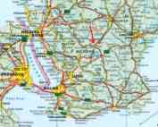

| |
IWONE
2013 - Getting there
|
| a |
The
seminar is going to take place at the location of Holma Foundation
("Stiftelsen Holma") outside the town Höör. See the map.
Holma
243 92 Höör
Sweden
Höör is situated at
the centre of the district Skåne in the south of Sweden -
approximately 50 km northeast of Malmö.
By air
Nearest international airport is Kastrup (Copenhagen). From Kastrup,
train leaves every 20 minutes for Malmö railway station and
further on to Höör.
In Höör we can pick you up and take you the last kilometres.
Please contact us via email some week before the seminar.
By train
Take the train directly to Malmö (or Copenhagen) then as from the
airport.
By car
Driving can be done:
1) From Germany via the ferries from Sassnitz, Rostok
or Travemünde to Trelleborg.
Then via road 108 towards Lund
and north via E 22.
After Hurva turn left towards
Hässleholm on road 23. After aprox 30 km you will pass through
Höör.
Link to TT-line
booking
2) From Denmark via the bridge (fee 275 SEK aprox. 30
euro one direction) to (around)
Malmö then via E 22 and
further on as in case 1.


Map over southern part of Sweden,
Höör
City
Skåne and part of Denmark.
Getting From
Grottbyn to IWONE (at Holma)
Follow the road back towards road 13 and
Höör.
Approximately 200m before your would reach road 13, turn left and
slightly backwards onto a small road. Sign towards "HOLMA".
After 600m you will see the main building to the left. |
|
|
|
|
|
|
| |
|


{kind=link}
{kind=link}
{kind=link}